FX Project — Industrial Management ERP Custom ERP system for factory planning, tracking and logistics
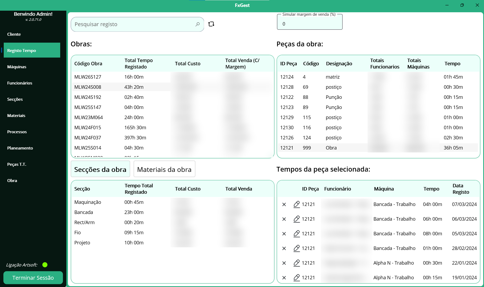
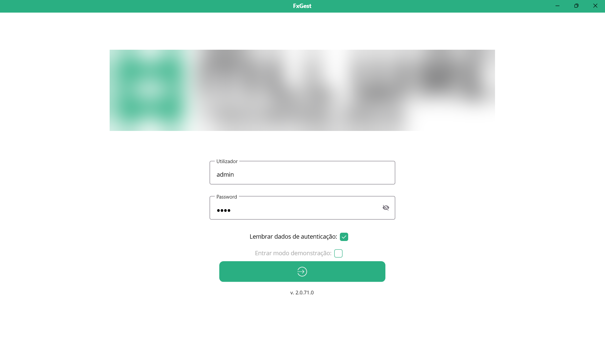
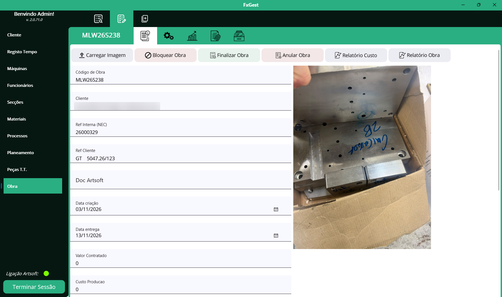
A freelance ERP solution built to improve planning efficiency, time tracking, and business logistics for an industrial client. The system was designed to address a range of operational demands across the factory floor.
The solution comprises three core components:
- Backoffice Application: Allows managers to control and monitor all factory operations from a centralized interface.
- Factory Floor App: Enables operators to log real-time events related to each component they work on.
- API & Integration Layer: Facilitates seamless communication between both applications and the database, ensuring consistent and reliable data flow across the system.
Factory Floor App
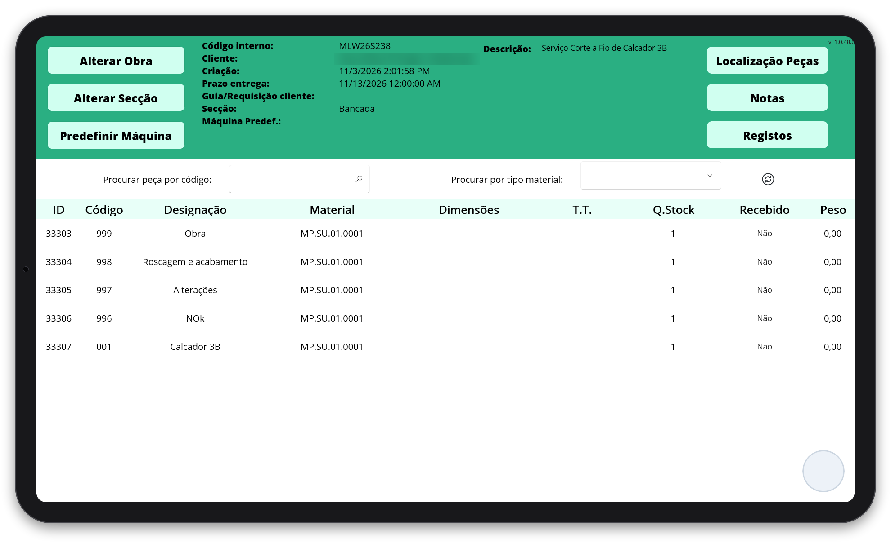
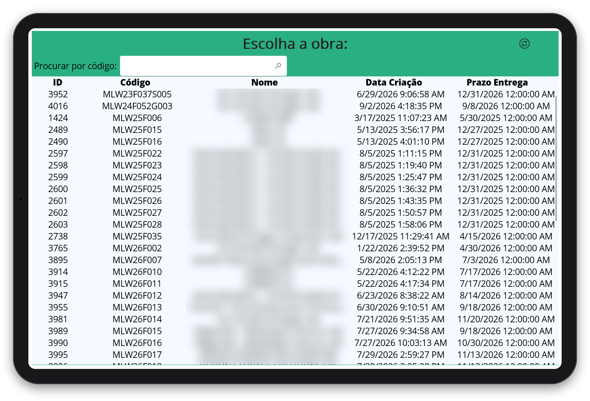
Stack: .NET 8, MAUI, Entity Framework Core, SQL Server
Public Transport App – Real-Time Routes and Stop Information Mobile app and backend API for public transit operators across Portugal
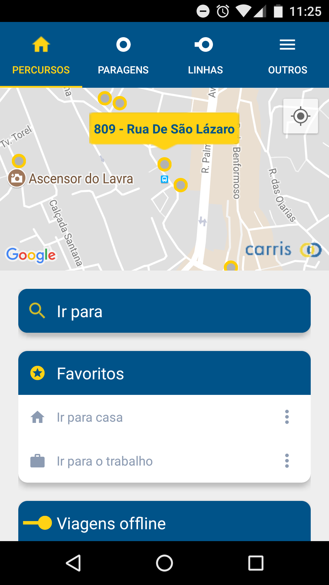
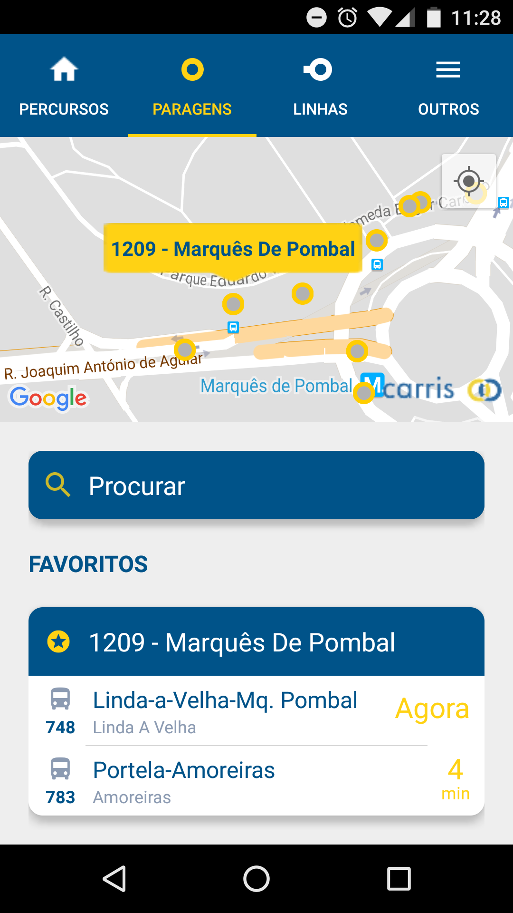
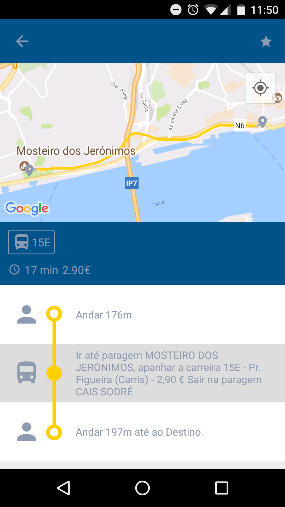
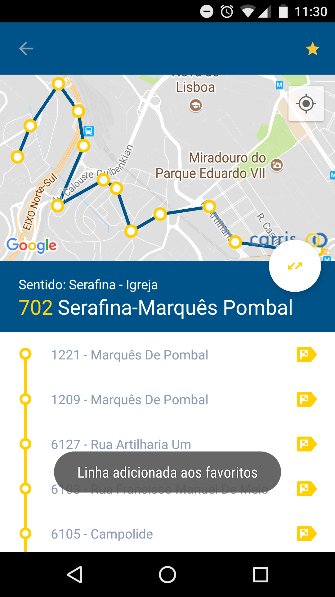
I lead the development and maintenance of a mobile application and backend API serving multiple public transport operators, including Carris. The platform delivers real-time information on routes, lines, wait times, and nearby stops.
Originally built around static schedule data, the app has since evolved to support live arrival estimates and vehicle tracking, significantly enhancing the passenger experience.
The backend infrastructure continuously synchronizes data from each transport operator, processes it, and exposes it in real time through a public API.
Stack: Xamarin, .NET Core, Entity Framework Core, SQL Server
View on Google PlayGTFS Feed Generation — General Transit Feed Specification Standardized transit data feeds consumed by Google Maps and other services
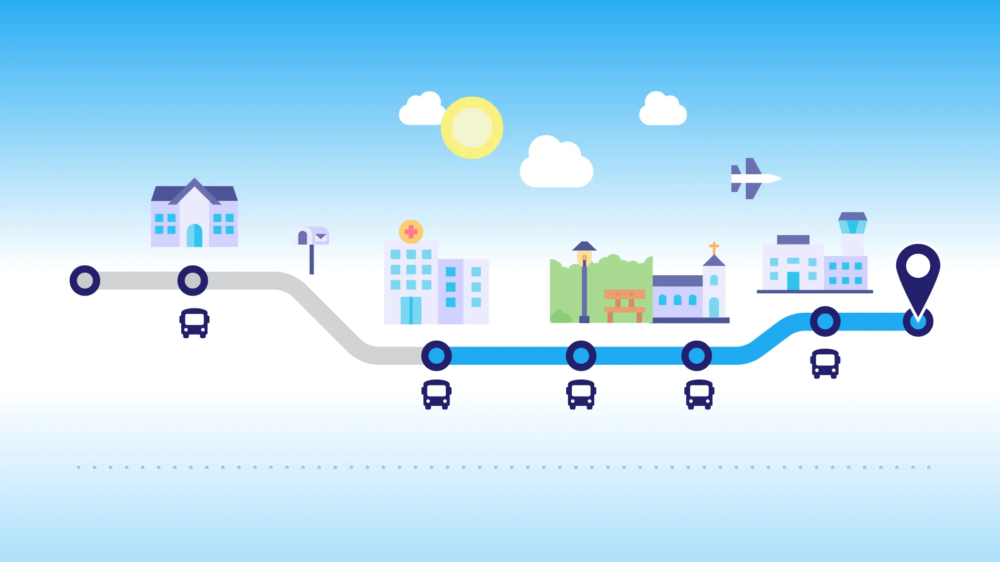
An extension of the Public Transport platform, this project focuses on generating standardized GTFS feeds from transit data provided by multiple urban mobility operators.
GTFS allows third-party services — such as Google Maps — to consume structured transit data and present users with accurate information on vehicle status, trip history, and stop/route details.
Each implementation requires careful adaptation to the client's data model, ensuring accurate transformation and full compliance with the GTFS specification.
Stack: .NET 8, Entity Framework Core, SQL Server
Carris GTFS Feed Mobility Database FeedPoker Wizard Live odds and Play/Fold calls for casino poker tables
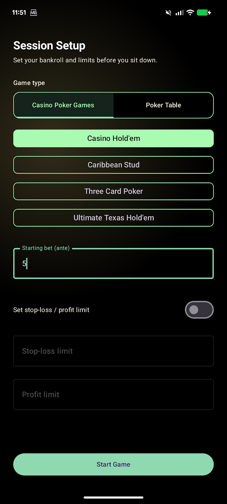
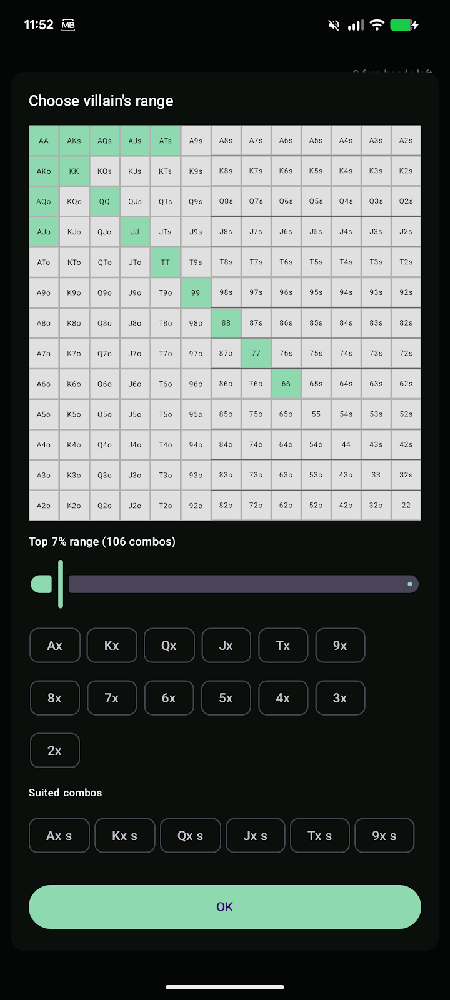
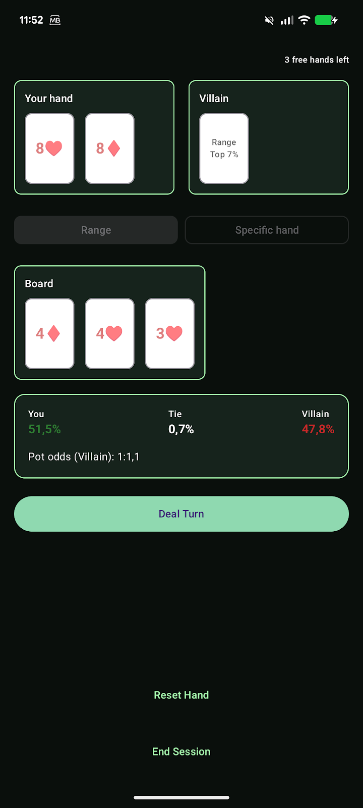
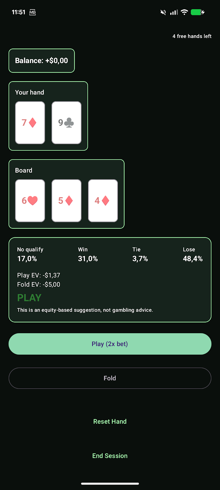
Poker Wizard is a real-time odds assistant built for poker tables — enter the cards as they are dealt at a live table and get instant odds based on the Monte Carlo algorithm, expected value and a clear Play or Fold recommendation.
Five ways to play:
- Casino Hold'em — dealer qualification, paytable and a live Play/Fold recommendation as the cards are dealt.
- Caribbean Stud — raise or fold with 5 cards against the dealer's up card, with full ante/play payout logic built in.
- Three Card Poker — Play or Fold against the dealer's three-card hand, with the ante bonus included.
- Ultimate Texas Hold'em — bet 4x, 3x, 2x or 1x (or check) on each round, with exact EV calculations for every option.
- Texas Hold'em Trainer — an equity lab for heads-up play: set your opponent to a specific hand or build a custom range on a full 13x13 grid, and see your win/tie/lose percentages and the exact pot odds you would need to call profitably.
Beyond the odds, the app also lets you record and store your live play:
- Hand History — record live cash-game hands as they happen (seats, blinds, stacks, hole cards, each player's actions on every street, board and result) and replay them step by step.
- Session Tracker — log your cash sessions and tournaments (date, duration, location, stakes, buy-ins and cash-out or prize) and see your results over time: profit, hourly rate, win rate and ROI.
Every mode tracks your session — set a starting bankroll and optional stop-loss and profit goals, and get a clear alert when a limit is reached so you can decide whether to keep playing.
No account, no setup, no signal needed at the table. Just you, your cards and the math.
Poker Wizard is an independent training tool and is not affiliated with any casino or poker room. All recommendations are equity-based estimates, not gambling advice.
Stack: Kotlin, Jetpack Compose
View on Google PlayBlackjack Wizard Card counting assistant for blackjack players
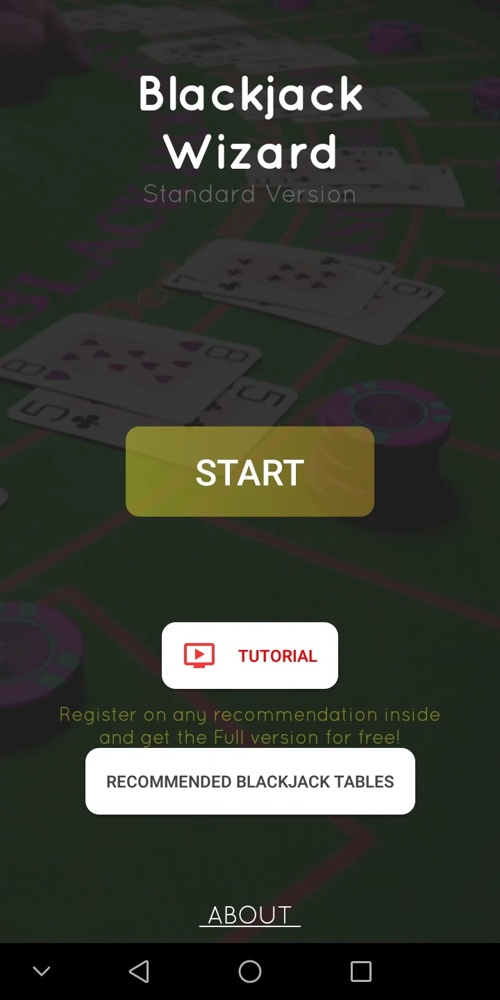
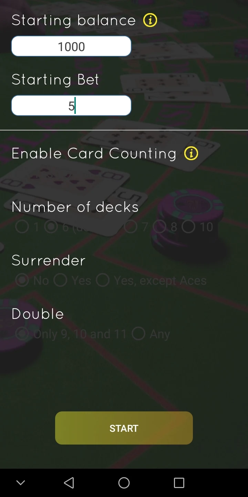
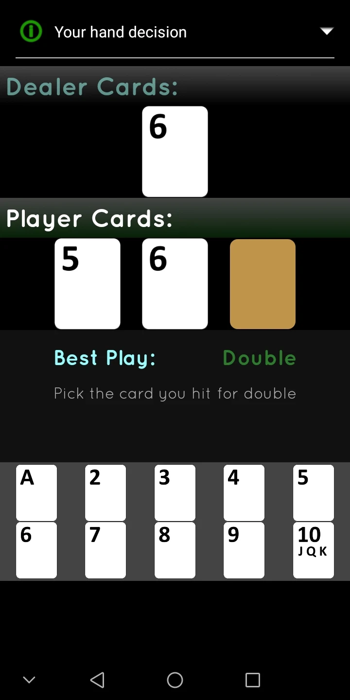
A personal project born from an interest in blackjack card counting theory. What started as a learning exercise evolved into a fully functional mobile application.
The app assists users in tracking their blackjack sessions by logging dealt cards and providing real-time card counting guidance based on established strategies.
Stack: Java, Kotlin, Firebase
View on Google Play